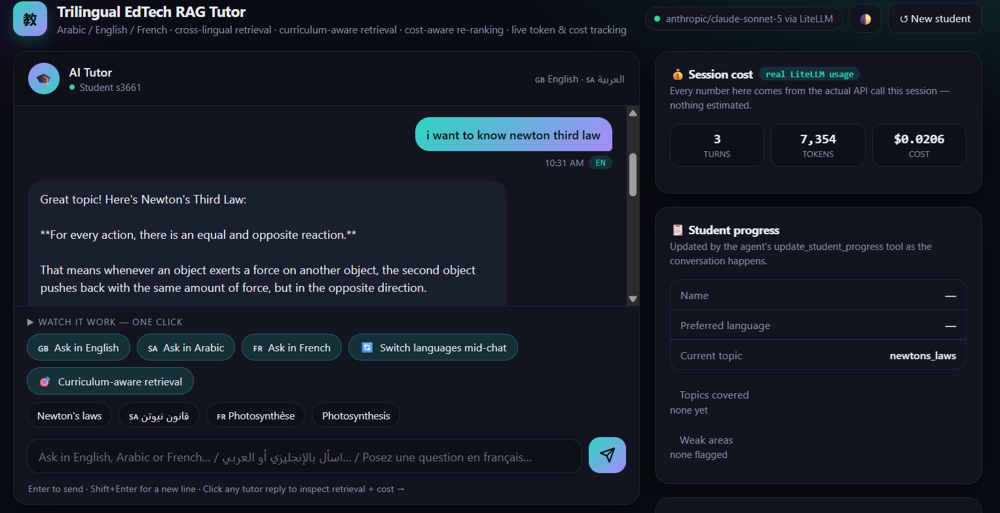

Trilingual EdTech RAG tutor with cost-aware retrieval
- Goal
- Built to close two specific skill gaps — LiteLLM and EdTech-shaped RAG — found while applying to a real job posting, so the proposal came with working code instead of just promises.
- Built
- A LangGraph tutor that answers curriculum questions in Arabic, English or French, whichever the student asks in. Every LLM call goes through LiteLLM (not the Anthropic SDK directly) with real token and cost logged per call. Retrieval is two-stage — a wide vector search, then a cross-encoder re-ranks it down to the top 3 — and stays scoped to the student's current curriculum topic by default, widening to the full curriculum only when that comes back empty. Each student is tracked by id across turns, so progress and conversation memory both persist.
- Quality
- Offline tests check the real claims, not just that the code runs: cross-lingual retrieval across all three languages, and that the topic filter actually excludes other topics instead of just returning everything.
- Python
- LangGraph
- LiteLLM
- Chroma
- Cross-encoder re-ranking
- FastAPI
Sample curriculum content (physics, biology) — a skills demo, not a live course. Everything else (LiteLLM calls, multilingual retrieval, re-ranking, per-student memory) is real, working code, not a mock.
Question · AR / EN / FR→AI agent→Answer + citation
search_curriculum · scoped to current topic → re-ranked top 3
nothing there? → widens to the full curriculum
